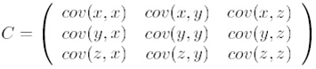
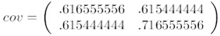
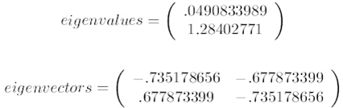
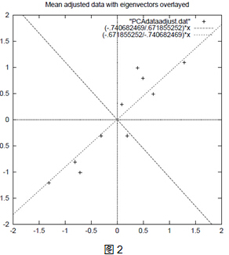
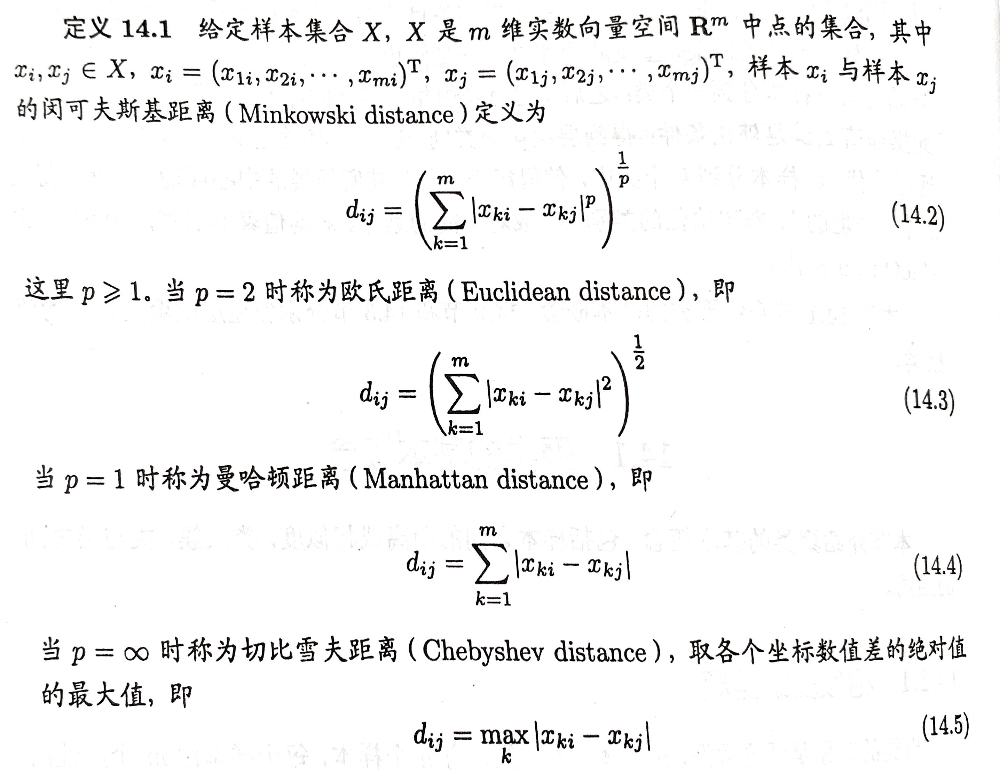

在开始正式的内容之前，先补充点线性代数相关的知识：
正交矩阵是方阵（行数和列数相等的矩阵。 n ∗ n n*n n ∗ n 单位向量 。正交矩阵的转置与其逆矩阵相等。即：Q T = Q − 1 , Q Q T = I Q^{T}=Q^{-1}, QQ^{T}=I Q T = Q − 1 , Q Q T = I
举个例子：
[ 1 0 0 1 ] \left[\begin{array}{ll}
1 & 0 \\
0 & 1
\end{array}\right] [ 1 0 0 1 ]
[ 1 0 0 − 1 ] \left[\begin{array}{ll}
1 & 0 \\
0 & -1
\end{array}\right] [ 1 0 0 − 1 ]
[ 0.96 − 0.28 0.28 0.96 ] \left[\begin{array}{rr}
0.96 & -0.28 \\
0.28 & 0.96
\end{array}\right] [ 0 . 9 6 0 . 2 8 − 0 . 2 8 0 . 9 6 ]
0.9 6 2 + 0.2 8 2 = 1 0.96^{2} + 0.28^{2} = 1 0 . 9 6 2 + 0 . 2 8 2 = 1
[ 0 − 0.80 − 0.60 0.80 − 0.36 0.48 0.60 0.48 − 0.64 ] \left[\begin{array}{ccc}
0 & -0.80 & -0.60 \\
0.80 & -0.36 & 0.48 \\
0.60 & 0.48 & -0.64
\end{array}\right] ⎣ ⎢ ⎡ 0 0 . 8 0 0 . 6 0 − 0 . 8 0 − 0 . 3 6 0 . 4 8 − 0 . 6 0 0 . 4 8 − 0 . 6 4 ⎦ ⎥ ⎤
0. 8 2 + 0. 6 2 = 1 0.8^{2}+0.6^{2}=1 0 . 8 2 + 0 . 6 2 = 1
一个矩阵 A A A A A A A A A A A A r ( A ) r(A) r ( A ) r a n k ( A ) rank(A) r a n k ( A ) r k ( A ) rk(A) r k ( A )
反射变换：
【问题引入】在平面直角坐标系中，第一象限内有一点 P ( x , y ) P(x, y) P ( x , y ) x x x y y y P 1 , P 2 , P 3 P_{1}, P_{2}, P_{3} P 1 , P 2 , P 3
由题意知：假设三个变换分别为 T 1 , T 2 , T 3 T_{1}, T_{2}, T_{3} T 1 , T 2 , T 3 M 1 , M 2 , M 3 M_{1}, M_{2}, M_{3} M 1 , M 2 , M 3
T 1 : [ x y ] → [ x ′ y ′ ] = [ x − y ] , M 1 = [ 1 0 0 − 1 ] T 2 : [ x y ] → [ x ′ y ′ ] = [ − x y ] , M 2 = [ − 1 0 0 1 ] T 3 : [ x y ] → [ x ′ y ′ ] = [ − x − y ] , M 3 = [ − 1 0 0 − 1 ] \begin{aligned}
&T_{1}:\left[\begin{array}{l}
x \\
y
\end{array}\right] \rightarrow\left[\begin{array}{l}
x^{\prime} \\
y^{\prime}
\end{array}\right]=\left[\begin{array}{c}
x \\
-y
\end{array}\right], \quad M_{1}=\left[\begin{array}{cc}
1 & 0 \\
0 & -1
\end{array}\right]\\
&T_{2}:\left[\begin{array}{l}
x \\
y
\end{array}\right] \rightarrow\left[\begin{array}{l}
x^{\prime} \\
y^{\prime}
\end{array}\right]=\left[\begin{array}{c}
-x \\
y
\end{array}\right], \quad M_{2}=\left[\begin{array}{cc}
-1 & 0 \\
0 & 1
\end{array}\right]\\
&T_{3}:\left[\begin{array}{l}
x \\
y
\end{array}\right] \rightarrow\left[\begin{array}{l}
x^{\prime} \\
y^{\prime}
\end{array}\right]=\left[\begin{array}{l}
-x \\
-y
\end{array}\right], \quad M_{3}=\left[\begin{array}{cc}
-1 & 0 \\
0 & -1
\end{array}\right]
\end{aligned} T 1 : [ x y ] → [ x ′ y ′ ] = [ x − y ] , M 1 = [ 1 0 0 − 1 ] T 2 : [ x y ] → [ x ′ y ′ ] = [ − x y ] , M 2 = [ − 1 0 0 1 ] T 3 : [ x y ] → [ x ′ y ′ ] = [ − x − y ] , M 3 = [ − 1 0 0 − 1 ]
反射变换概念
像 [ 1 0 0 − 1 ] , [ − 1 0 0 1 ] , [ − 1 0 0 − 1 ] \left[\begin{array}{cc}1 & 0 \\ 0 & -1\end{array}\right],\left[\begin{array}{cc}-1 & 0 \\ 0 & 1\end{array}\right],\left[\begin{array}{cc}-1 & 0 \\ 0 & -1\end{array}\right] [ 1 0 0 − 1 ] , [ − 1 0 0 1 ] , [ − 1 0 0 − 1 ] F F F 反射变换矩阵 ，对应的变换叫做反射变换 ，相应地，前者称作轴反射 ，后者称做中心反射 ，其中定直线称为反射轴 ，定点称做反射点 。
反射变换的分类
与矩阵 M 1 = [ 1 0 0 − 1 ] M_{1}=\left[\begin{array}{cc}1 & 0 \\ 0 & -1\end{array}\right] M 1 = [ 1 0 0 − 1 ] x x x
与矩阵 M 2 = [ − 1 0 0 1 ] M_{2}=\left[\begin{array}{cc}-1 & 0 \\ 0 & 1\end{array}\right] M 2 = [ − 1 0 0 1 ] y y y
与矩阵 M 3 = [ − 1 0 0 − 1 ] M_{3}=\left[\begin{array}{cc}-1 & 0 \\ 0 & -1\end{array}\right] M 3 = [ − 1 0 0 − 1 ]
与矩阵 M 4 = [ 0 1 1 0 ] M_{4}=\left[\begin{array}{cc}0 & 1 \\ 1 & 0\end{array}\right] M 4 = [ 0 1 1 0 ] y = x y=x y = x
旋转变化：
【问题引入】假设大风车的叶片在同一个平面内转动，以旋转中心 O O O P ( x , y ) P(x, y) P ( x , y ) O O O θ \theta θ P ′ ( x ′ , y ′ ) P^{'}(x^{'}, y^{'}) P ′ ( x ′ , y ′ )
设 O P OP O P x x x α \alpha α ∣ O P ∣ = ∣ O P ′ ∣ = r |O P|=\left|O P^{\prime}\right|=r ∣ O P ∣ = ∣ O P ′ ∣ = r { x = r cos α y = r sin α \left\{\begin{array}{l}x=r \cos \alpha \\ y=r \sin \alpha\end{array}\right. { x = r cos α y = r sin α { x ′ = r cos ( α + θ ) = r cos α cos θ − r sin α sin θ y ′ = r sin ( α + θ ) = r sin α cos θ + r cos α sin θ \left\{\begin{array}{l}x^{\prime}=r \cos (\alpha+\theta)=r \cos \alpha \cos \theta-r \sin \alpha \sin \theta \\ y^{\prime}=r \sin (\alpha+\theta)=r \sin \alpha \cos \theta+r \cos \alpha \sin \theta\end{array}\right. { x ′ = r cos ( α + θ ) = r cos α cos θ − r sin α sin θ y ′ = r sin ( α + θ ) = r sin α cos θ + r cos α sin θ { x = r cos α y = r sin α \left\{\begin{array}{l}x=r \cos \alpha \\ y=r \sin \alpha\end{array}\right. { x = r cos α y = r sin α { x ′ = x cos θ − y sin θ y ′ = x sin θ + y cos θ \left\{\begin{array}{l}x^{\prime}=x \cos \theta-y \sin \theta \\ y^{\prime}=x \sin \theta+y \cos \theta\end{array}\right. { x ′ = x cos θ − y sin θ y ′ = x sin θ + y cos θ
由意可知：T : [ x y ] → [ x ′ y ′ ] = [ x cos θ − y sin θ x sin θ + y cos θ ] T:\left[\begin{array}{l}x \\ y\end{array}\right] \rightarrow\left[\begin{array}{l}x^{\prime} \\ y^{\prime}\end{array}\right]=\left[\begin{array}{l}x \cos \theta-y \sin \theta \\ x \sin \theta+y \cos \theta\end{array}\right] T : [ x y ] → [ x ′ y ′ ] = [ x cos θ − y sin θ x sin θ + y cos θ ] T : [ x y ] → [ x ′ y ′ ] = [ cos θ − sin θ sin θ cos θ ] [ x y ] T:\left[\begin{array}{l}x \\ y\end{array}\right] \rightarrow\left[\begin{array}{l}x^{\prime} \\ y^{\prime}\end{array}\right]=\left[\begin{array}{ll}\cos \theta & -\sin \theta \\ \sin \theta & \cos \theta\end{array}\right]\left[\begin{array}{l}x \\ y\end{array}\right] T : [ x y ] → [ x ′ y ′ ] = [ cos θ sin θ − sin θ cos θ ] [ x y ] [ cos θ − sin θ sin θ cos θ ] \left[\begin{array}{ll}\cos \theta & -\sin \theta \\ \sin \theta & \cos \theta\end{array}\right] [ cos θ sin θ − sin θ cos θ ]
旋转变换的概念
矩阵 [ cos θ − sin θ sin θ cos θ ] \left[\begin{array}{ll}\cos \theta & -\sin \theta \\ \sin \theta & \cos \theta\end{array}\right] [ cos θ sin θ − sin θ cos θ ] 旋转变换矩阵 ，对应的变换称做旋转变换 ，其中角 θ \theta θ 旋转角 ，定点 O O O 旋转中心 。
知识扩展
当旋转中心为坐标原点且逆时针 旋转 θ \theta θ [ cos θ − sin θ sin θ cos θ ] \left[\begin{array}{cc}\cos \theta & -\sin \theta \\ \sin \theta & \cos \theta\end{array}\right] [ cos θ sin θ − sin θ cos θ ] 顺时针 旋转 θ \theta θ [ cos θ sin θ − sin θ cos θ ] \left[\begin{array}{cc}\cos \theta & \sin \theta \\ -\sin \theta & \cos \theta\end{array}\right] [ cos θ − sin θ sin θ cos θ ]
旋转变换只改变几何图形的相对位置，不改变几何图形的形状和大小。
图形的旋转由旋转中心和旋转的角度共同决定。
显然，绕定点旋转 180 度的变换相当于关于原点的中心反射变换。
左奇异向量和右奇异向量
当给定一个大小为 m ∗ n m*n m ∗ n A A A A A A m ∗ m m*m m ∗ m A A T AA^{T} A A T n ∗ n n*n n ∗ n A T A A^{T}A A T A A A T = P Λ 1 P T A A^{T}=P \Lambda_{1} P^{T} A A T = P Λ 1 P T A T A = Q Λ 2 Q T A^{T} A=Q \Lambda_{2} Q^{T} A T A = Q Λ 2 Q T A A A
A = P Σ Q T A=P \Sigma Q^{T} A = P Σ Q T
其中，矩阵 P = ( p ⃗ 1 , p ⃗ 2 , … , p ⃗ m ) P=\left(\vec{p}_{1}, \vec{p}_{2}, \ldots, \vec{p}_{m}\right) P = ( p 1 , p 2 , … , p m ) m ∗ m m*m m ∗ m p ⃗ 1 , p ⃗ 2 , … , p ⃗ m \vec{p}_{1}, \vec{p}_{2}, \ldots, \vec{p}_{m} p 1 , p 2 , … , p m A A T AA^{T} A A T A A A 左奇异向量（left singular vector） ；矩阵 Q = ( q ⃗ 1 , q ⃗ 2 , … , q ⃗ n ) Q=\left(\vec{q}_{1}, \vec{q}_{2}, \ldots, \vec{q}_{n}\right) Q = ( q 1 , q 2 , … , q n ) n ∗ n n*n n ∗ n q ⃗ 1 , q ⃗ 2 , … , q ⃗ n \vec{q}_{1}, \vec{q}_{2}, \ldots, \vec{q}_{n} q 1 , q 2 , … , q n A T A A^{T}A A T A A A A 右奇异向量（right singular vector） ；矩阵 Λ 1 \Lambda_{1} Λ 1 m ∗ m m*m m ∗ m Λ 2 \Lambda_{2} Λ 2 n ∗ n n*n n ∗ n A A T AA^{T} A A T A T A A^{T}A A T A Σ \Sigma Σ m ∗ n m*n m ∗ n 异值（singular value） 。
在线性代数中，对称矩阵（英语：symmetric matrix）是一个方形矩阵，其转置矩阵和自身相等。
A = A T A=A^{T} A = A T
对称矩阵中的右上至左下方向元素以主对角线（左上至右下）为轴进行对称。若将其写作 A = ( a i j ) A=(a_{ij}) A = ( a i j ) i i i j j j
a i j = a j i a_{ij}=a_{ji} a i j = a j i
下列是 3 × 3 3×3 3 × 3
[ 1 2 3 2 4 − 5 3 − 5 6 ] \left[\begin{array}{ccc}
1 & 2 & 3 \\
2 & 4 & -5 \\
3 & -5 & 6
\end{array}\right] ⎣ ⎢ ⎡ 1 2 3 2 4 − 5 3 − 5 6 ⎦ ⎥ ⎤
下列是斜对称矩阵（反对称矩阵）：
[ 0 − 3 4 3 0 − 5 − 4 5 0 ] \left[\begin{array}{ccc}
0 & -3 & 4 \\
3 & 0 & -5 \\
-4 & 5 & 0
\end{array}\right] ⎣ ⎢ ⎡ 0 3 − 4 − 3 0 5 4 − 5 0 ⎦ ⎥ ⎤
1. 方差和协方差的定义
在统计学中，方差 是用来度量单个随机变量 的离散程度 ，而协方差则一般用来刻画两个随机变量 的相似程度 ，其中，方差的计算公式为
σ x 2 = 1 n − 1 ∑ i = 1 n ( x i − x ˉ ) 2 \sigma_{x}^{2}=\frac{1}{n-1} \sum_{i=1}^{n}\left(x_{i}-\bar{x}\right)^{2} σ x 2 = n − 1 1 i = 1 ∑ n ( x i − x ˉ ) 2
其中，n n n x ^ \hat{x} x ^
在此基础上，协方差 的计算公式被定义为
σ ( x , y ) = 1 n − 1 ∑ i = 1 n ( x i − x ˉ ) ( y i − y ˉ ) \sigma(x, y)=\frac{1}{n-1} \sum_{i=1}^{n}\left(x_{i}-\bar{x}\right)\left(y_{i}-\bar{y}\right) σ ( x , y ) = n − 1 1 i = 1 ∑ n ( x i − x ˉ ) ( y i − y ˉ )
在公式中，符号 x ^ , y ^ \hat{x}, \hat{y} x ^ , y ^ σ x 2 \sigma^{2}_{x} σ x 2 x x x σ ( x , x ) \sigma(x, x) σ ( x , x )
2. 从方差/协方差到协方差矩阵
根据方差的定义，给定 d d d x k , k = 1 , 2 , … , d x_{k}, k=1,2, \ldots, d x k , k = 1 , 2 , … , d 随机变量的方差 为
σ ( x k , x k ) = 1 n − 1 ∑ i = 1 n ( x k i − x ˉ k ) 2 , k = 1 , 2 , … , d \sigma\left(x_{k}, x_{k}\right)=\frac{1}{n-1} \sum_{i=1}^{n}\left(x_{k i}-\bar{x}_{k}\right)^{2}, k=1,2, \ldots, d σ ( x k , x k ) = n − 1 1 i = 1 ∑ n ( x k i − x ˉ k ) 2 , k = 1 , 2 , … , d
其中，为方便书写，x k i x_{ki} x k i x k x_{k} x k i i i n n n n n n
对于这些随机变量，我们还可以根据协方差的定义，求出两两之间的协方差 ，即
σ ( x m , x k ) = 1 n − 1 ∑ i = 1 n ( x m i − x ˉ m ) ( x k i − x ˉ k ) \sigma\left(x_{m}, x_{k}\right)=\frac{1}{n-1} \sum_{i=1}^{n}\left(x_{m i}-\bar{x}_{m}\right)\left(x_{k i}-\bar{x}_{k}\right) σ ( x m , x k ) = n − 1 1 i = 1 ∑ n ( x m i − x ˉ m ) ( x k i − x ˉ k )
因此，协方差矩阵 为
Σ = [ σ ( x 1 , x 1 ) ⋯ σ ( x 1 , x d ) ⋮ ⋱ ⋮ σ ( x d , x 1 ) ⋯ σ ( x d , x d ) ] ∈ R d × d \Sigma=\left[\begin{array}{ccc}
\sigma\left(x_{1}, x_{1}\right) & \cdots & \sigma\left(x_{1}, x_{d}\right) \\
\vdots & \ddots & \vdots \\
\sigma\left(x_{d}, x_{1}\right) & \cdots & \sigma\left(x_{d}, x_{d}\right)
\end{array}\right] \in \mathbb{R}^{d \times d} Σ = ⎣ ⎢ ⎢ ⎡ σ ( x 1 , x 1 ) ⋮ σ ( x d , x 1 ) ⋯ ⋱ ⋯ σ ( x 1 , x d ) ⋮ σ ( x d , x d ) ⎦ ⎥ ⎥ ⎤ ∈ R d × d
其中，对角线上的元素为各个随机变量的方差，非对角线上的元素为两两随机变量之间的协方差，根据协方差的定义，我们可以认定：矩阵 Σ \Sigma Σ d ∗ d d*d d ∗ d
奇异值分解（SVD）是一种矩阵因子分解方法，是线性代数的概念，但在统计学中被广泛使用，成为其重要工具。
任意一个 m ∗ n m*n m ∗ n m m m m ∗ n m*n m ∗ n n n n 矩阵的奇异值分解一定存在，但不唯一。 奇异值分解可以看作是矩阵数据压缩的一种方法，即用因子分解的方式近似地表示原始矩阵，这种近似是在平方损失意义下的最优近似。


注意奇异值分解不要求矩阵 A A A
前面叙述的 A = U Σ V T A=U \Sigma V^{\mathrm{T}} A = U Σ V T
1. 紧奇异值分解

更多内容（例子等）详见书籍。
2. 截断奇异值分解
在矩阵的奇异值分解中，只取最大的 k 个奇异值（k < r，r 为矩阵的秩）对应的部分，就得到矩阵的截断奇异值分解。实际应用中提到的矩阵的奇异值分解时，通常指截断奇异值分解。

更多内容（例子等）详见书籍。
在实际应用中，常常需要对矩阵的数据进行压缩，将其近似表示，奇异值分解提供了一种方法。后面将要叙述，奇异值分解是在平方损失（弗罗贝尼乌斯范数）意义下对矩阵的最优近似。紧奇异值分解对应着无损压缩，截断奇异值分解对应着有损压缩。

更多内容（例子等）详见书籍。
矩阵的奇异值分解也可以看作是将其对应的线性变换分解为旋转变换、缩放变换及旋转变换的组合。
更多内容详见书籍。
更多内容详见书籍。
奇异值分解也是一种矩阵近似的方法，这个近似是在弗罗贝尼乌斯范数(Robeniu norm)意义下的近似。矩阵的弗罗贝尼乌斯范数是向量的 L 2 L_{2} L 2
更多内容详见书籍。
更多内容详见书籍。
前面定义了矩阵的紧奇异值分解与截断奇异值分解。事实上紧奇异值分解是在弗罗贝尼乌斯范数意义下的无损压缩，截断奇异值分解是有损压缩。截断奇异值分解得到的矩阵的秩为 k，通常远小于原始矩阵的秩 r，所以是由低秩矩阵实现了对原始矩阵的压缩。
更多内容详见书籍。